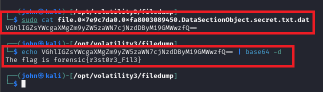

Challenges Index
Back to HomeChallenge 1: [Something secret inside] [Easy]
Your task is to analyze the memory dump, extract the secret message and revealing the flag.
Solution
1. โจทย์
2. ทำการ Downlaod ไฟล์ และ Unzip จะได้ไฟล์ที่เป็น memory dump ชื่อ "Something_secret_inside.dmp"
3. ใช้เครื่องมือ Magnet AXIOM ในการวิเคราะห์ และพบว่ามีไฟล์ที่น่าสนใจ ชื่อ secret
4. ใช้ Volatility ในการ scanfiles และ grep เฉพาะคำว่า secret จะทำให้ทราบ address จากนั้นจึงทำการ dumpfile ออกมาจาก address ที่พบ
5. อ่านไฟล์ที่ทำการ dump ออกมา จะได้ base64 และทำการ decode ก็จะได้คำตอบ (flag)
Challenge 2: [Out Put] [Meduim]
-
Solution
1. ไม่ได้ capture โจทย์ไว้ แต่เนื้อหาประมาณว่า มีคนพยายามเข้ารหัสไฟล์บน PC โดยการใช้ XOR และให้หา flag จากไฟล์ที่ดาวน์โหลดมา
2. ไฟล์ที่ดาวน์โหลดมาเป็น memory dump ชื่อไฟล์ JOHN-PC-20240402-164218.dmp
3. ลองใช้ Volatility ดูพวก process, command line แล้วไม่เห็นอะไรผิดปกติ เลยลองใช้ strings เอาพวกที่เป็น text ออกมา และลองหาคำว่า XOR จากคำอธิบายโจทย์ พบว่ามีฟังก์ชันน่าสนใจ ชื่อ xor_encrypt
4. เลยลองเข้าไปดูในไฟล์ strings.txt โดยใช้ vi แล้ว search หาคำว่า xor_encrypt พบว่าบรรทัดก่อนหน้ามีตัวแปร flag define เอาไว้